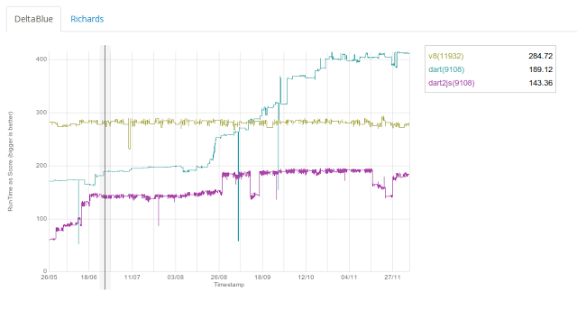

Dart VM Advent Calendar 2012 12/12¶
JITコンパイルの概要¶
JITコンパイルのメイン処理は、CompileParsedFunctionHelperです。
エラー処理などはばっさり省略してコードを引用しています。
runtime/vm/compiler.cc
// Return false if bailed out.
static bool CompileParsedFunctionHelper(const ParsedFunction& parsed_function,
bool optimized) {
bool is_compiled = false;
Isolate* isolate = Isolate::Current();
JITコンパイルの入り口です。
入力は、ASTに変換されたParsedFunctionです。
TypeFeedback
FlowGraph* flow_graph = NULL;
if (optimized) {
ASSERT(parsed_function.function().HasCode());
FlowGraphPrinter::Printf("path optimized\n");
// Extract type feedback before the graph is built, as the graph
// builder uses it to attach it to nodes.
// Do not use type feedback to optimize a function that was
// deoptimized too often.
if (parsed_function.function().deoptimization_counter() <
FLAG_deoptimization_counter_threshold) {
const Code& unoptimized_code =
Code::Handle(parsed_function.function().unoptimized_code());
isolate->set_ic_data_array(
unoptimized_code.ExtractTypeFeedbackArray());
}
}
Dart VMは、非最適化のコードを実行中に、InlineCacheのcalleeごとに型情報を収集します。
最適化する場合は、実行時に収集した、TypeFeedbackArrayを取得します。
共通のコンパイル処理
// Build the flow graph.
FlowGraphBuilder builder(parsed_function);
flow_graph = builder.BuildGraph(FlowGraphBuilder::kNotInlining,
0); // The initial loop depth is zero.
ASTから中間表現に変換して、FlowGraphを生成します。
最適化JITコンパイルの場合、以降の様々な最適化により、高速な命令に置き換えられていきます。
JITコンパイラの最適化¶
最適化オプションが指定されていた場合、以下の処理で中間表現を最適化します。
最適化JITコンパイルのパス
if (optimized) { // 最適化オプション
// Transform to SSA (virtual register 0 and no inlining arguments).
flow_graph->ComputeSSA(0, NULL); // definevalueのnumberを振りなおす。Phiの生成。
}
if (optimized) {
flow_graph->ComputeUseLists(); // def-useチェインの再計算。
FlowGraphOptimizer optimizer(flow_graph);
optimizer.ApplyICData(); // 全IRをvisitorで走査して、型付けと高速な中間表現への置換を行う。
// Compute the use lists.
flow_graph->ComputeUseLists(); // def-useチェインの再計算。
最適化JITコンパイラの中間表現はSSA形式であるため、最初にSSA形式用のフィールドを書き換えます。
その後、Optimizerを生成し、どんどん最適化します。
Inline展開
// Inlining (mutates the flow graph)
if (FLAG_use_inlining) {
FlowGraphInliner inliner(flow_graph);
inliner.Inline();
// Use lists are maintained and validated by the inliner.
}
中間表現レベルでインライン展開を行います。
実際には、呼び出し先の関数をASTからIRに変換し、FlowGraphを生成します。
その後、FlowGraphの親と子を連結して、1つの大きなGraphにしてしまいます。
JITコンパイルの各種最適化
// Propagate types and eliminate more type tests.
if (FLAG_propagate_types) {
FlowGraphTypePropagator propagator(flow_graph);
propagator.PropagateTypes(); // 型情報を後方に伝搬します。
}
// Propagate sminess from CheckSmi to phis.
optimizer.PropagateSminess(); // 型情報を元に、不要なCheckSmiを畳み込みます。
// Use propagated class-ids to optimize further.
optimizer.ApplyClassIds(); // 型情報を元に、InstanceCallを高速なcallに置き換えます。
// Do optimizations that depend on the propagated type information.
// TODO(srdjan): Should this be called CanonicalizeComputations?
optimizer.OptimizeComputations(); // 型情報を元に、命令の融合と高速な中間表現への置換を行います。
// Unbox doubles.
flow_graph->ComputeUseLists();
optimizer.SelectRepresentations(); // 型情報を元に、Guardの挿入とUnboxing(DoubleとMintとSmi)を行います。
if (FLAG_constant_propagation ||
FLAG_common_subexpression_elimination) {
flow_graph->ComputeUseLists(); // def-useリストを再計算
}
if (FLAG_constant_propagation) {
ConstantPropagator::Optimize(flow_graph);
// A canonicalization pass to remove e.g. smi checks on smi constants.
optimizer.OptimizeComputations(); // 定数伝搬を行います。
}
if (FLAG_common_subexpression_elimination) {
if (DominatorBasedCSE::Optimize(flow_graph)) { // GVN1回目です。共通な中間表現を畳み込みます。
// Do another round of CSE to take secondary effects into account:
// e.g. when eliminating dependent loads (a.x[0] + a.x[0])
// TODO(fschneider): Change to a one-pass optimization pass.
DominatorBasedCSE::Optimize(flow_graph); // GVN2回目です。
}
}
if (FLAG_loop_invariant_code_motion &&
(parsed_function.function().deoptimization_counter() <
(FLAG_deoptimization_counter_threshold - 1))) {
LICM::Optimize(flow_graph); // ループ不変式の移動を行います。
}
if (FLAG_range_analysis) {
// We have to perform range analysis after LICM because it
// optimistically moves CheckSmi through phis into loop preheaders
// making some phis smi.
flow_graph->ComputeUseLists(); // def-useリストを再計算
optimizer.InferSmiRanges(); // 値のレンジ解析を行います。
}
// Perform register allocation on the SSA graph.
FlowGraphAllocator allocator(*flow_graph);
allocator.AllocateRegisters(); // 各中間表現のin,outルールを参照し、LinearScanレジスタ割付を行います。
}
Dart VMの最適化JITコンパイルの特徴は、中間表現のまま、レジスタ割付を行っているところだと思います
共通のCompile処理
Assembler assembler;
FlowGraphCompiler graph_compiler(&assembler,
*flow_graph,
optimized);
{
graph_compiler.CompileGraph(); //機種依存のCompileGraphを呼び出します。
}
非最適化、最適化共通のコンパイル処理です。
基本的には、FlowGraphをvisitして、各種中間表現のEmitを叩いてアセンブラを生成します。
コンパイル後の処理
{
const Function& function = parsed_function.function();
const Code& code = Code::Handle(
Code::FinalizeCode(function, &assembler, optimized)); // アセンブルして、Code領域に書き込みます。
code.set_is_optimized(optimized);
graph_compiler.FinalizePcDescriptors(code);
graph_compiler.FinalizeDeoptInfo(code);
graph_compiler.FinalizeStackmaps(code);
graph_compiler.FinalizeVarDescriptors(code);
graph_compiler.FinalizeExceptionHandlers(code);
graph_compiler.FinalizeComments(code);
graph_compiler.FinalizeStaticCallTargetsTable(code);
if (optimized) { // JITコンパイルしたコードを設定します。
CodePatcher::PatchEntry(Code::Handle(function.CurrentCode()));
function.SetCode(code);
} else {
function.set_unoptimized_code(code);
function.SetCode(code);
}
}
JITコンパイラの構成¶
| file | line | overview |
|---|---|---|
| flow_graph | 1.3k | FlowGraphの構造と操作を定義、中間表現のTOP Context |
| flow_graph_builder | 3.3k | ASTから中間表現に変換し、FlowGraphを生成する。 |
| flow_graph_compiler | 1.2k | コンパイラの機種非依存、共通処理 |
| flow_graph_compiler_ia32 | 2k | 機種依存の最適化Stub生成と、コンパイルの主制御 |
| flow_graph_inliner | 0.8k | inline展開 |
| flow_graph_optimizer | 4.2k | 各種最適化 |
| flow_graph_allocator | 3.2k | レジスタ割付 |
以下は、2012/12/12のパフォーマンススコアのグラフです。
DeltaBlueベンチマークにおける、Dart VM と V8の比較だそうです。
詳細は以下
http://news.dartlang.org/2012/12/dart-vm-improves-performance-by-50.html
上記のグラフで、5月から10月頃まで性能が急上昇していますが、
その頃にFlowGraphファミリーが作成されていました。すごいですね。。
ちなみに、8月末の急上昇は、SmiやDoubleをUnboxingしてBinaryInstrに置換するRepresentationの追加です。
9月中の急上昇は、inline展開の実装です。一回どんと上がってあとDisableになって、もっかいどんと上がってますので。
| file | line | overview |
|---|---|---|
| intermediate_language | 7k | 中間表現の機種非依存部分を定義 |
| intermediate_language_ia32.cc | 2806 | ia32用の中間表現の実装、主にEmittorの定義。 |
中間表現は、機種非依存と機種依存に分かれています。
機種依存のほうには、主に中間表現からアセンブラ命令にEmitする処理と、レジスタ割付時のルールが記述されています。
まとめ¶
- JITコンパイラは1つ。中間表現は、非最適化向けIRと最適化向けIRが定義されている。
- 最適化パスを実行して各種最適化を行う。
- JITコンパイラと中間表現は、各アーキテクチャごとに定義する。